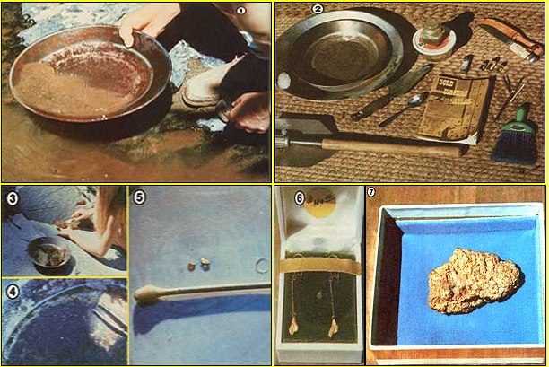

[1] Panning for placer in a rushing mountain stream. [2J The novice forty-niner's start up kit. [3J Moss on rocks- nature's own filter-can hold a treasure! [4] Golden flecks glittering in the prospector's pan. [5] Pick up the precious flakes with a moist Q-Tip. [6] Setting your strike in jewelry can enhance its appearance . . .and its value! [7] Gold! That ""monster-sized"" nugget . . , every prospector's dream.